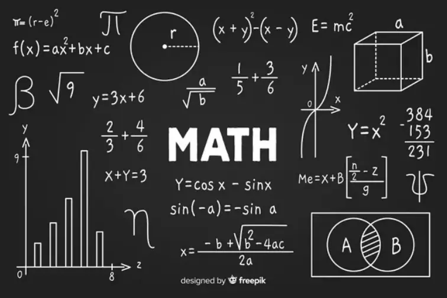
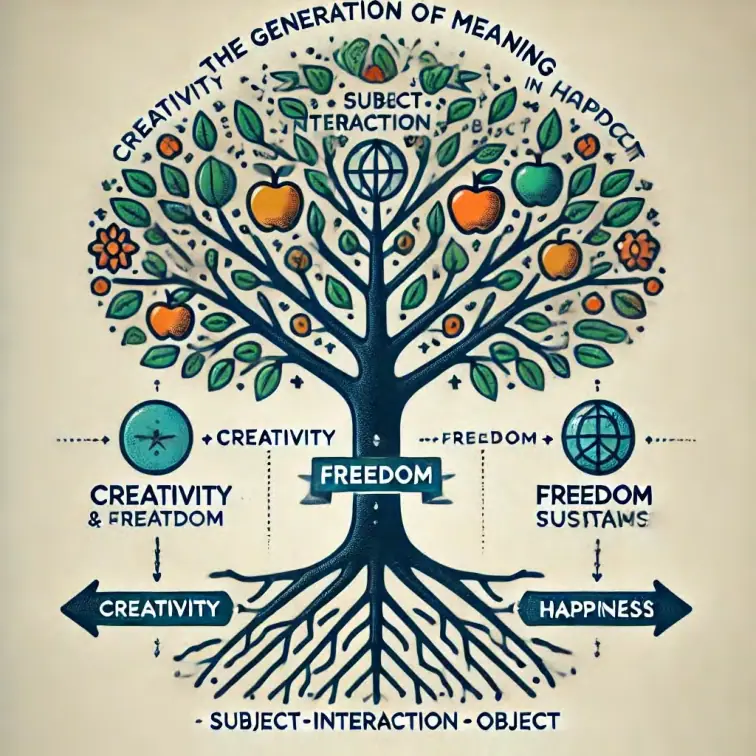

上篇：
对人类现代创造力范式的本体论批判
一、引言：当创造变成拼装，荣耀就开始虚幻
在每一座城市的天际线中，在闪烁的高铁车厢、智能手表、量子芯片、AI助手、展览馆、国家实验室、大学课堂中，我们都能听到一个词反复被提起、被膜拜、被制度化追求——创造力。
“创造力”，几乎成了现代社会最被推崇的“神性能力”。
它被写进国家战略中，嵌入教育目标内，变成科研项目的关键词，被包装进企业文化手册，被家长赋予孩子身上的全部希望。
每一个人仿佛都在参与一场“创造力竞赛”：
谁更能“解决问题”，谁就更有创造力；
谁能“跨界整合资源”，谁就被认为拥有创新天赋；
谁能讲出一个“结构合理、逻辑清晰”的方案，谁就是团队中的“创意核心”。但我们必须冷静地提出一个问题：
人类真的在创造吗？
我们真的在创造新的结构、新的生命形式、新的意义空间，还是只是在不断地将旧结构重新组装？
我们是否正在经历一场宏大的、系统性的创造幻觉？
1.1 “创造力”背后的默认图式
在拆解“创造力”的神话之前，我们先来看看它被隐性建构的方式：
现代社会对“创造力”的评价，几乎都隐含以下公式：
创造 = 熟悉工具 + 掌握方法 + 拼接组件 + 高效输出 + 可展示结果
这套公式背后的逻辑是——
知识是模块化的；
技能是标准化的；
方法是可以被“教会”的；
成果是可以被“格式化呈现”的。
所以，“创造”被理解为：
能不能把几个工具用得顺手；
能不能把几个学科拼得巧妙；
能不能把一个问题“解决得快而好”。
于是，创造就不再是“生成意义”的过程，而成了“模块重组”的竞赛。
1.2 创造，还是拼装？
在这种创造范式之下，我们看到的许多“创新成果”，其实只是：
把两个旧概念拼在一起（AI + 教育 = AI教育）；
把三种技术组件组合成一个产品（摄像头 + 算法 + 外壳 = 智能门铃）；把几个学科名词连接成一个研究方向（神经网络 + 道德判断 = 道德AI建模）；把社会现象改写成一个可发表的模型（内卷 + 情绪劳动 = 数字社会焦虑指数）。这些拼装过程当然有价值，也会带来短期可见的功能增益，但它们并不是意义上的“生成”。
它们没有从张力中诞生，没有在混沌中涌现，没有在节奏之流中沉淀。它们只是：
形式逻辑下的“结构排列”，而非生命系统中的“节奏生成”。
1.3 模块化的荣耀：乐高式文明的哲学幻觉
这种被我们普遍接纳的创造方式，本质上是一种“乐高式创造力”：
组件是预设的；
拼接路径是有限的；
成品是可控制、可验证、可迭代的；
创造是“搭起来”，而不是“生出来”。
我们称之为“模块化创新”、“系统集成”、“跨界融合”，
但它的深层本体论逻辑是：
人被训练成为高效的拼装者，
世界被拆解为可组合的工具集合，
意义被外包给结果的可视性与社会评价。
这是一种文明性的误认：
我们把“乐高高手”误当作“文明缔造者”；
我们把“结构整合者”误当作“生成智慧者”；
我们把“系统效率”误当作“创造深度”。
于是，人类文明开始迈向一种光鲜而空洞的高地：
结构越来越多，节奏越来越少；
目标越来越明确，意义越来越稀薄；
技术越来越强，生命越来越虚。
1.4 结构的繁荣，节奏的死亡
我们不妨回顾以下现实图景：
每年上百万的新专利，90%是旧技术的组合性变形；
大量新课程体系，不过是“XX+项目制”的新拼法；
城市规划越发先进，却让人感到窒息而非呼吸；
大量学生“拥有”了所谓的“创新能力”，却丧失了真正的问题感、生命感与节奏感。这些现象的背后，透露出一个基本事实：
我们创造的是越来越多的结构单元，
但我们无法在这些结构中体验“存在的意义”。
因为：
这些结构不是从生活张力中生长出来的；
这些结构没有经历生成中的混沌与失败；
这些结构没有进入节奏性的沉淀与组织。
它们只是“搭建”，不是“构建”；
只是“拼出结果”，而不是“生成结构”；
只是“完成任务”，而不是“穿越生命”。
1.5 形式逻辑压制下的创造力幻觉
这种“拼装式创造”如此受欢迎，是因为它符合形式逻辑的三大要求：
| 形式逻辑律 | 压制的生成过程 |
|---|---|
| 同一律（A=A） | 拒绝模糊、模态转换 |
| 非矛盾律 | 拒绝张力状态、矛盾结构 |
| 排中律 | 拒绝模糊灰度、模态叠加 |
然而，真实的创造恰恰需要：
在模糊中感知张力；
在矛盾中保持忍耐；
在混沌中试错失败；
在不确定中沉淀结构。
换句话说：
创造不可能发生在形式逻辑统治的区域，
它只可能发生在张力、节奏与失败之间的“生命中介地带”。
而我们现在的文明逻辑，恰恰从根上否定了这一生成地带的合法性。
1.6 “创造力教育”的深度误导
更令人忧虑的是，我们对“创造力”的误解，已经深入到了教育系统之中。
我们教孩子做PPT，是教他们如何“漂亮拼接”；
我们鼓励学生“头脑风暴”，却只教他们“关键词组合”；
我们设计“创意作文”，其实就是“五段式拼图模板”；
我们引导“创新课题”，不过是“找一个可以组装的新名词”。
孩子们并没有真正穿越过一次张力危机，
没有在混沌中经历真实的失败与恢复，
没有在生成节奏中建立起独属于他们自己的“存在结构”。
他们只是被训练成了更快、更准、更稳的“创造型工具人”。
小结：创造力的荣耀，是空的
当我们把创造力从“生成节奏”简化为“结构拼装”，
它所能提供的，只是一种技术上的功能胜利，
却永远无法带来生命上的存在真实。
我们活在一座“拼图城市”中，
用“模块教育”培养下一代，
用“逻辑演绎”裁判创造行为，
最终，却找不到任何意义的沉淀感。
因为：
当创造变成拼装，荣耀就开始虚幻；
当意义丧失节奏，文明就开始空心。
第二章：模块化教育的制度结构与节奏断裂
——从“教学拼图”到“节奏死亡”的文明深层危机
一、引言：一切看起来都更清晰了，只有生命变得更混乱
走进今天的学校，尤其是那些被称为“现代化教育”的机构，你会发现一个令人惊叹的结构性特征：
教室干净整齐；
课程模块化分明；
知识点条理清晰；
教学目标明确可量化；
学生被打包在时间表里按节奏推进；
教师按课件、教案、评分标准运作。
乍看之下，一切井井有条，仿佛教育终于找到了“科学之道”。
但再往深处走一步，我们会听到隐隐的失真之声：
孩子越来越“听话”，却越来越焦虑；
学习越来越系统，却越来越无感；
成绩越来越高，动机越来越低；
教师越来越努力，课堂越来越空洞。
这不是偶然。
这是因为教育已经被一种“模块化拼装逻辑”彻底统治。
这套逻辑，使教育丧失了最根本的东西：
节奏。
二、模块化教育的五大制度结构
我们先来分析现代教育系统中最具代表性的“模块化结构逻辑”，它们构成了今日教育的操作骨架：
1. 学科分科结构
教育将知识划分为“语文、数学、英语、物理、化学、生物”等学科模块；每门学科各自独立，教学内容不交叉，教学目标不协同；
教师按学科训练，学生按学科评分。
这种“拼图式知识观”，使得学生从一开始就被置于一个知识割裂结构中，而无法体验到整体性理解与生成节奏。
2. 课程单元模块化
每门课程被划分为“单元”，每个单元有“教学目标–知识点–练习题–小测验”；学生学完一个单元，即“掌握了该模块”，继续向下推进；
教师被要求“覆盖教学内容”，而非陪伴学生的生成节奏。
教学进度与结构被认为是“客观存在”，而学生的节奏波动被视为“偏差”或“落后”。
3. 时间切块制度
一天被切为“40分钟 × 若干节”；
一学期按周进度推进，每一周精确规定教学内容；
时间成为一种控制节奏的硬结构，而非生成节奏的生命容器。
学生必须在统一时间完成相同任务，无论他是否准备好，无论他在经历什么张力。
4. 评价标准模板化
所有学习成果被转换为“分数”“等级”“绩点”；
所谓“成长”不再指向生命状态变化，而只指向结构目标达成度；
老师的教学质量、学生的学习水平、学校的教育绩效，全部标准化评估。节奏性的生成（例如理解的慢热、情感的反复、失败的反思），被完全压缩为静态结构快照。
5. 教育路径工业化
所有孩子按统一流程：小学→初中→高中→高考→大学→研究生→职业；教育成为流水线产品设计流程，创造力被规划、设计、培养、评估；
所有“非标准节奏”的学习路径都被边缘化、排斥或矫正。
个体成为“教育产品”，不再是一个能生成自我节奏的SIO结构。
三、节奏是教育的生命线，而模块切断了它
教育不是填鸭，也不是拼图，而是生命节奏的组织。
每一个孩子、每一位教师、每一个课堂、每一个知识点，都存在以下三个节奏层：
| 节奏类型 | 含义 |
|---|---|
| 结构节奏 | 知识自身的展开节奏（如函数的前置概念、文法的顺序） |
| 关系节奏 | 师生之间的感受节奏、理解节奏、回应节奏 |
| 情绪节奏 | 学生内心的张力感、困惑期、突破点、满足感节奏 |
当这些节奏被统一的模块结构强行切割时，会出现以下现象：
节奏与结构错位：明明学生尚未“进入节奏”，却被迫完成“教学任务”；
张力被压抑，无法释放：学生的“不舒服”不被理解，只被视为“拖后腿”；理解不再沉淀，而是跳跃：一个知识点跳过去了，但学生内心没有连接感；师生关系节奏扁平化：老师只管内容推进，无法调节互动节奏；
情绪节奏崩解：孩子对学习本身的感受从好奇、焦虑到麻木、躲避。
最终形成的是：节奏死亡 + 结构假象。
四、模块化教育的四重幻觉
| 幻觉 | 现实后果 |
|---|---|
| 学习是信息传递 | 忽视情绪张力、路径探索与意义沉淀 |
| 教学是结构控制 | 忽视生成节奏，误将“进度”当作“理解” |
| 创新是模块组合 | 教学生“拼装知识”，而非在混沌中生成新结构 |
| 成绩是评价标准 | 忽视生成过程的价值，将意义压缩为数字 |
教育变成了结构逻辑的仪式化重复，而非生成生命节奏的参与体验。
五、节奏教育重建的方向
1. 从“教学目标”转向“节奏感知”
每一堂课的设计，不只是“教什么”，而是“感受什么”“觉察什么张力”；
教师要成为“节奏组织者”，而不是“内容搬运工”。
2. 从“固定时间表”转向“弹性节奏结构”
设计“留白课”“自由学习日”“节奏循环周”；
时间不只是推进机制，也是节奏恢复机制。
3. 从“统一评估”转向“节奏轨迹反馈”
引入节奏反思日志、张力识别报告、路径生成地图；
用结构+节奏双维度评估真实成长过程。
4. 从“科目分科”转向“SIO生活实践整合课”
每门课都是一个生活SIO场景，融合主–客–互动三元；
数学+身体+节奏 = “节律建模”课程；
语文+情绪+社会 = “意义叙述”课程；
科学+自然+农事 = “张力系统探索”课程。
六、结语：教育，不是交付知识，而是组织节奏
教育的本质不是填知识、跑流程、做展示，而是：
在主–客–互动的节奏中，
帮助个体生成其自身的意义结构与存在节奏。
模块化教育的辉煌是工业文明的工具理性胜利，
但它已经无法支撑智慧文明的节奏性生命成长。
是时候从“结构式教育”走向“节奏式教育”：
不是教你会拼图，而是让你能觉察张力；
不是给你更多答案，而是让你能走出自己的生成路径；
不是把你变成成果，而是让你成为“节奏中的存在”。
模块化教育的目标就是培养乐高创造力。

三、什么是“乐高式创造力”？
——模块文明的生成幻觉与节奏逻辑的替代性坍缩
我们常将“创造力”视作人类最宝贵的能力之一。
但在现代文明的运作中，这种创造力已被一种近乎普遍的模式所“结构化”：不是从生活节奏中生成，而是从预设组件中拼装。
这正是我们所说的“乐高式创造力”（Lego-Style Creativity）：
看似创造，其实是拼装；
看似生成，其实是逻辑排列；
看似意义，其实是展示效果。
这种创造方式，在深层上是由形式逻辑主导的，它并不强调以下要素：
张力（tension）；
节奏（rhythm）；
混沌（chaos）；
失败（collapse）；
生成（emergence）。
它只强调：“你能不能用这些既有的结构块，拼出‘看起来新’的东西”。
以下，我们分四个方面详细展开其逻辑内核。
1. 模块化结构：把世界拆成拼图的幻觉机制
模块化结构是“乐高式创造力”的起点本体论，它将世界理解为：
一堆已经稳定存在的结构组件，
只要组合得当、排列得新，就能“创新”。
在这种逻辑下：
世界变成“知识块、技能块、工具块”的合集；
教育变成“课程–单元–知识点”的排列表；
设计变成“功能 × 审美 × 适配”的交叉集合；
科研变成“文献框架 × 技术模型 × 可视化输出”的模块拼图；
产品变成“标准接口 + 体验反馈 + 成本模型”的组合构件。
创造力的任务不再是“穿越结构”，而是“优化结构组合”。
于是：
医学的创新，不是重构身体张力节奏，而是拼“基因编辑+靶向治疗”；
教育的改革，不是结构解耦，而是“AI+教学+数据分析”；
城市的升级，不是生活节奏的重塑，而是“传感器+算法+流程”。
所有事物都被处理为“可被移动的组件”，
所有创造都被简化为“重新拼法”。
但问题是：
真正的意义是否可以被组件组合产生？
真正的“新结构”是否可以用旧结构排列得出？
当“创造”只是“排列学”的游戏，它便失去了生命的生成性。
2. 工程化逻辑：从生命事件到操作流程的退化
“乐高式创造力”的第二大逻辑是：工程化。
它将创造过程彻底工业逻辑化，构建为：
输入 → 处理 → 输出
输入：数据、需求、素材、知识；
处理：工具、技术、逻辑、方案；
输出：产品、成果、成果展示、交付物。
创造就此退化为一种项目管理与资源配置能力：
项目式教学；
项目型科研；
项目型生活设计；
项目型人生规划。
于是“创造”成为：
谁处理得快；
谁整合得巧；
谁包装得好；
谁交付得准。
所有不可控、不可度量、节奏未定、路径不明的“生成性过程”，被系统性忽略，甚至被视为“无效”、“不可培训”、“非生产性”。
而一切节奏性的生命行为（如顿悟、缓慢觉察、忍耐等待、失败后生成），则完全无法被纳入工程逻辑框架中。
3. 形式逻辑主导：压制张力与混沌的创造逻辑
“乐高创造力”的深层思维基础是三大形式逻辑律：
| 逻辑律 | 意义 | 压制生成的方式 |
|---|---|---|
| 同一律（A=A） | 一个事物恒等于自己 | 否认模糊性、波动性、张力变形 |
| 非矛盾律 | 不可同时为A与非A | 排斥生命中一切“自我冲突”与不稳定生成 |
| 逻辑律 | 意义 | 压制生成的方式 |
|---|---|---|
| 排中律 | 每一命题非真即假，不存在中间状态 | 抹杀混沌、张力、生成中不可归类的“节奏区间” |
但真正的生成是这样的：
一开始是“不清楚”；
过程中是“既是又不是”；
最后是“突然出现”。
这是一种存在先于逻辑、节奏先于结构、混沌先于秩序的生成图景。
形式逻辑之下的“创造”，只能是对既有结构的操作。
它无法解释：
节奏从哪里来？
张力怎么释放？
新结构如何在失败中突变？
为什么很多创造过程不是“合逻辑”，而是“反惯例”？
所以：
一切被形式逻辑严格主导的创造系统，都是节奏死亡的结构系统。
它是高效的，但不是生命的。
4. 展示驱动与指标导向：从生成之流退化为展示之物
“乐高式创造力”的最终目标，不是生成本身，而是展示可见成果。
一切创造行为的价值，不是由生成主体自己确认，而是：
有没有发表（期刊）；
有没有专利（产权）；
有没有落地（成果）；
有没有评分（教育）；
有没有转化率（产品）；
有没有点赞量（社交平台）。
于是：
创造=包装；
生成=剪辑；
意义=标签；
评价=KPI。
生成节奏不再是目的，而是“素材”；
张力不再是入口，而是“障碍”；
失败不再是必经，而是“负面”；
沉淀不再是厚度，而是“浪费时间”。
创造变成了一种“被评价的结构行为”，而不再是“存在的生命行为”。
5. 小结：模块操作者的幻觉
现代教育、科研、设计、管理所培育的大量“创造者”，其实不是“生成者”，而是：
受过训练的模块操作者。
他们被赋予工具，被给予模块，被提供目标，然后被要求：
用最快的速度，拼出一个“看起来新”的结果。
但他们：
并不感知张力；
并未经历混沌；
并未生成节奏；
并未沉淀结构。
他们完成任务，却未生成意义。
他们获得结果，却未经历生成。
他们被称为“创造者”，但他们只是“拼接者”。
这，正是“乐高式创造力”的虚幻本体。

四、乐高创造力的五大系统特征
——结构繁荣下的节奏死亡与意义枯竭
“乐高式创造力”看似高效、先进、科学，是现代社会创造活动的通行范式。然而，它并非中性的技术逻辑，而是一种深层文明范式，它不仅决定了我们如何构造系统，更决定了我们是否还能生成意义结构、维系节奏生命、容纳张力流动。
以下，我们系统分析其五大结构性特征，以及各自的文明后果。
1. 拼装性：一切“创造”都已被“预制化”
“拼装性”是乐高创造力最显著的特征。它将所有创造行为简化为：
既有模块 × 拼接路径 × 展示输出 = 创新成果
在这种逻辑下，创造就变成了——
谁更熟悉模块组件；
谁更懂拼接规则；
谁更快交付结构成品。
模块化的不仅仅是工具与材料，连思维本身也被模块化：
概念 = 关键词 + 演绎公式；
技术 = API + 模型参数；
语言 = 模板 + 修辞插件；
教学 = 单元模块 + 教案脚本；
政策 = 成功经验 + 适配指标。
结果是：
人人可创造，但创造失去灵魂；
创新结果频繁出现，但“生成性惊奇”极其罕见；
学会“搭起来”的人越来越多，能“生出来”的人越来越少。
拼装的世界，是可控的世界，却不是“活的世界”。
2. 可控性：线性化、程序化、技术主义化的统治
在乐高式创造范式中，最被推崇的，是“可控的创造过程”。
创造被重构为一种“工程流程”：
拆解问题；
匹配组件；
优化路径；
最小成本完成；
快速上线、迭代反馈。
这使得一切“不可预测的混沌行为”，都被视为“低效”或“失败”。
非线性生成、偶发性突破、结构性崩解再生——这些本是创造的母体，被排斥在创造逻辑之外。
学生的思维被训练成算法流程；研究人员的创新被变为“控制变量”；产品设计被预设为“模块组合+功能验证”；人生被规划成“阶段性路径+成果节点”。
结果是：
我们变得越来越善于“模拟创新”；
却越来越畏惧“真实生成”；
因为生成是不可控的，是失败性的，是非确定的。
在“可控性”主导下，自由律死了，幸福律被压抑，特征律成为展示工具。
3. 去张力化：结构的冷静掩盖了生命的真实入口
所有真正的创造，都是从“张力感”开始的：
哪里不舒服？
哪里矛盾重重？
哪里卡顿、破裂、不协调？
张力，是创造的发动机。
但在乐高式创造中，张力被视为“故障源”，而非“发生点”。
情绪波动？——不利于团队协作；
表达混乱？——请清晰梳理逻辑；
节奏拖慢？——不符合任务周期；
失败尝试？——不符KPI目标。
于是：
感觉不能出现；
纠缠被扁平化；
复杂性被压缩；
人被“去张力化”地训练为“平稳、规范、高效”的执行者。
但是：
没有张力感知，就没有节奏生长。
没有节奏生长，就没有真正创造。
4. 工具理性化：创造即“达成目标”，而非生成结构
现代文明将“目标达成”神圣化，一切都围绕KPI、成果、转化率展开。创造亦然。在乐高逻辑下，创造的定义早已悄然滑向：
“以最低成本最快方式达成结构目标的路径寻找与优化行为”
其核心不是生成结构，而是：
把任务模块化；
把目标数字化；
把过程最优化；
把失败概率最小化；
把结果视觉化。
在这样的机制下：
教育变成“成果可展示的项目学习”；
科研变成“易被发表的拼装模型验证”；
艺术变成“结构惊艳的视觉输出”；
治理变成“绩效可量化的执行策略”。
节奏的生成、意义的内在感、情绪的自然生长、关系的不可控交织……统统不被纳入“创造”的判断标准。
创造从此沦为：
“优化”而非“发明”；
“组合”而非“觉察”；
“驱动”而非“呼吸”。
5. 外部评估机制：一切“创造”，都要他人说了算
在传统文明中，创造是一种“存在的发生”——
你从张力中生成节奏；
你在失败中生成路径；
你在互动中形成结构；
你通过特征沉淀，感到“我做到了”。
而在乐高式系统中，创造从“内部生成”转为“外部评估”：
| 外部标准 | 实际后果 |
|---|---|
| 成果是否可发表？ | 创造被约束为“结构完整+话语规范”的论文格式 |
| 项目是否被立项？ | 创造必须服从政策热点与预算模型 |
| 产品是否被市场接受？ | 创造被要求服从用户期待与数据逻辑 |
| 是否赢得“创意大奖”？ | 创造被导向“谁的展示更吸睛、更符号化、更易评判” |
结果是：
所有的“创意”都变成“演出”；
所有的“成果”都变成“展示”；
所有的“创造者”都变成“打分候选人”。
内在的节奏、感受、成就感——被完全剥离。
四.1 乐高创造的真实案例解剖
——你看到的是结构，但它并不“活着”
案例一：科研项目的“拼装幻觉”
某高校“跨学科研究团队”提出一个被称为“前沿创新”的项目：
选取神经科学模型；
结合语言生成系统（大语言模型）；
再引入教育情境中的认知评估标准。
用算法跑出大量数据，用图表建模，用概念框架包装，用论文语言写出“创新性理论”。外在表现：
有论文；
有算法；
有视觉展示；
有平台支持。
但内部结构呢？
是否是从真实教育张力中生发的？
是否是从神经行为节奏失调中觉察到的？
是否是结构路径在失败中试探出来的？
都没有。
它只是“模型+模型+情境”的再包装。
创造力在此，成为“多组件拼装技术”。
案例二：“创意作文”的结构工厂
某小学推出“创意写作课程”：
每篇作文分为五段；
第一段设问；
第二段铺垫；
中间一转折；
结尾再升华；
配上“情绪词库”“修辞插件”“金句模板”。
孩子们写得飞快，作文比赛常拿奖。
但写作的本体发生了吗？
有没有来自生活经验的张力？
有没有节奏感的组织与调整？
有没有情绪的自由律生成与表达？
有没有特征性的语言生成过程？
没有。孩子们只是——套模写文、拼图成句。
他们掌握的是“文本乐高技术”，不是“节奏语言生命”。
案例三：智慧城市的结构空洞
某新兴城市建设智慧城市系统：
城市被分为数据子系统；
居民活动被AI动态感知；
交通按算法调度；
城市空间按美学标准模块划分；
公共服务一体化平台接入。
一切看似高效、先进、协同。
但城市真正的生命节奏还在吗？
居民之间的节奏互动空间是否存在？
情绪缓冲、冲突修复、公共共鸣结构是否被嵌入？
慢街区、沉默区、节律场所是否考虑在系统逻辑中？
答案：几乎没有。
城市的“结构之城”在运行，
但“节奏之河”早已干涸。
小结：结构有了，生命没了
以上三个案例说明：
你可以在乐高创造力逻辑下制造一切你想要的“结构”，
但你无法生成任何你真正想要的“存在感”。
因为——
创造的结构是拼出来的，不是生出来的；
意义的感觉是呼吸出来的，不是显示出来的；
孩子的语言是涌现的，不是模板装配的；
城市的共生是节奏编织的，不是系统构架的。
所以我们必须说：
乐高创造力，看似文明高峰，实则是节奏生命的系统性死亡现场。

五：结构之城中的节奏之死：
乐高文明的五大幻觉与替代逻辑
一、开场时刻：当结构越来越高，节奏却越来越沉默
我们活在一个结构高度繁复的时代。
科学建构着精密的模型；
教育编排着可控的课程体系；
城市构筑着数据驱动的功能区；
医疗系统切分着器官与专科；
生活平台嵌入着推荐算法与评价系统。
一切看似进步、有序、繁荣。
然而，越来越多的人在这样的结构中感到：
焦虑；
空虚；
疲乏；
无意义；
无归属感。
我们不是没有了系统，而是——系统变成了坟墓。
坟葬的，不是功能，而是节奏；不是效率，而是意义。
人类创造了“结构之城”，却丧失了“节奏之河”。
二、乐高文明的五大幻觉：结构繁荣下的真实断裂
我们将“乐高式创造力”视为当代文明的代表性范式，其深层支撑着以下五大幻觉：
幻觉一：结构越复杂，系统就越智慧
我们误以为：
系统模块多 → 就代表智能强；
算法维度深 → 就代表科学进步。
但真实发生的是：
模块增加，节奏断裂；
逻辑精密，感知麻痹；
数据充足，连接稀薄。
系统并未更“智慧”，它只是更“结构化”，
但并没有生成更多“共鸣结构”或“节奏循环”。
结构之多，掩盖了关系之死；
智慧之假象，遮蔽了生命之退场。
幻觉二：功能越多，体验越好
技术不断迭代，软件不断升级，界面越来越复杂，功能越来越丰富。但你真的更幸福了吗？
手机有无数APP，但你更孤独；
软件能自动生成图文，但你写不出一句真话；
平台能量身推荐，但你不再主动探索；
智慧家居可以“帮你活着”，但你越来越不知“自己是如何活着的”。
我们以为“功能=体验”，但真正有体验的是：
有节奏感的沉浸、有张力感的生成、有路径感的穿越、有特征感的沉淀。
功能堆叠之上，感受正悄然退场。
幻觉三：表达越多，关系就越紧密
社交软件让人随时在线，群聊、弹幕、朋友圈、AI互动一应俱全。
但我们却从未如此彼此疏远。
表达很多，理解很少；
回复很快，回应很慢；
关注很多，陪伴极少；
打字很熟，眼神很陌生。
我们以为“表达越多，关系越深”，但真实的关系从来不在于“内容量”，而在于：
是否经历共同张力；
是否拥有共享节奏；
是否沉淀互动结构。
结构制造交流接口，
但只有节奏制造真实关系。
幻觉四：展示越可视，成果就越真实
教育强调“可展示学习成果”；
科研强调“可视化研究逻辑”；
产品强调“视觉流畅体验”；
人才强调“个人简历矩阵”。
于是我们开始“造结构”：
把行为包装成过程，把过程包装成模型，把模型包装成成果。
但真相是：
你未必经历了节奏，只是剪辑了过程；
你未必完成了生成，只是展示了图景；
你未必沉淀了意义，只是调动了感官。
一切都能展示，
唯独“我真的做成了”的感觉，消失了。
幻觉五：标准越清晰，文明就越高级
世界被测量；
学生被排名；
医学被分类；
情绪被量表化；
创造被指标化。
我们误以为文明就是“精准、规范、可比较”。
但文明的本质是：
容纳张力、允许失败、生成节奏、沉淀特征。
标准本该是“节奏的轮廓”，
却变成了“节奏的终结”。
当一切都用标准剪裁后，
个体的节奏全被抹平。
三、结构逻辑与节奏逻辑的五大根本对立
| 对立点 | 结构逻辑（乐高式） | 节奏逻辑（生成式） |
|---|---|---|
| 起点 | 预设模块 | 现象张力 |
| 过程 | 可控拼接 | 不确定生成 |
| 判断标准 | 结果是否完成，结构是否闭合 | 是否沉淀节奏，是否释放张力 |
| 成果 | 可展示成果，可评估成果 | 可共鸣结构，可延展生命 |
| 主体感 | 被测评，被外部定义 | 内在参与，主客互动，SIO整体参与 |
四、文明的替代逻辑：从结构性幻觉走向节奏性重建
要让文明复苏节奏，需要以下五种替代性创造逻辑：
1. 张力觉察，取代“流程图熟练”
教育中：教学生感受“哪里不顺”，而不是“哪里没答对”；
科研中：发现“理论矛盾点”，而不是“拼接新框架”。
一切节奏，都从“不舒服”开始。
2. 路径试错，取代“路径优化”
产品设计：不是“拼最优方案”，而是“允许失败节奏”；
社会治理：不是“快速响应”，而是“过程生成空间”。
生成是非线性的，不容纳错误就无法诞生新结构。
3. 节奏沉淀，取代“功能实现”
教育成果不是“看起来学完了”，而是“节奏内化了”；
科技成果不是“能运行”，而是“能与人节奏共振”。
真成果，是沉淀出的节奏，不是视觉上的展示。
4. 互动生成，取代“组件调用”
教师的作用：组织节奏，而非灌输知识；
医生的作用：引导系统节奏恢复，而非修补结构组件；
领导的作用：激发共鸣节奏，而非高效调度模块。
5. 意义发生，取代“成果评估”
意义不是通过KPI打分得来的；
意义是在主客互动中生成的节奏感、存在感、参与感。
不是创造出了东西，而是“我真的经历了它”。
五、结语：请听文明深处那段被切断的节奏
我们建起了结构之城，却断裂了节奏之河。
我们在信息、系统、技术、成果的洪流中前进，却一次次在最核心的地方失去“活着的感受”。
而这一切，都源于一个巨大却隐秘的文明假设：
结构是一切的答案，节奏是可以被忽略的附属。
今天，我们必须重新修复那个节奏的断口。
从每一个课堂的呼吸开始，
从每一次失败的允许开始，
从每一个张力的识别开始，
从每一个结构的节奏重建开始。
因为，真正的文明，不是“拼出来的”，
而是：“从节奏中生出来的”。

六、乐高创造力为何造成“意义空洞”？
——三律压抑下的结构幻觉与生成枯竭
在技术、教育、科研、管理、城市、艺术等多个领域，“创造力”已经成为核心价值标签。但令人惊讶的是，创造行为越频繁，创造成果越丰富，现代人所感受到的“意义”却越来越空洞。
创意项目做完，却毫无成就感；
论文发表，却感受不到“我真的发现了什么”；
工程完成，却像机器一样在操作；
教育设计再完美，学生依然迷茫、焦虑、脱节。
为什么？
因为所谓的“创造”，其实是一种三律失效下的乐高拼装活动。
它压抑了创造力的本体生成机制，造就了一个结构繁荣却节奏崩塌的文明。
❌幸福律失效：张力无法释放
（1）张力感知被误解为“系统故障”
在真实的生成过程中，张力是起点：
感到不对劲；
感觉情绪起伏；
意识到现有结构无法满足新问题。
这本该是创造的入口。
但在乐高创造中，张力被视为“不合逻辑”“流程错误”“低效干扰”：
情绪=不专业；
犹豫=没准备好；
不确定=不合标准。
所以：
学生在学不会的时候，感到羞耻；
研究者在理论混乱时，被迫“收敛语言”；
员工在怀疑流程时，被认为“情绪化”。
张力被压制、规训、排除。
结果是：
创造流程变成“清洁工厂”——一切必须顺畅、高效、无噪音。
但节奏恰恰是从“不顺”中生长的。
没有张力，就没有节奏的开始；
没有节奏，就没有“做成的感觉”。
于是，创造行为完成了，意义却未发生。
（2）情绪不能释放，生命就失去了“创造的乐趣”
幸福律不仅仅指创造成果带来的快乐，
更是指张力得以有序释放后，节奏得以完成的那种“内在舒展感”。
一次实验的反复失败→顿悟→突破；
一篇文章写到某一段→突然顺畅→文字流动起来；
一个对话冲突→忍耐→转换→真正听见彼此。
这些才是真正的幸福律运行场景。
但在“乐高创造”中：
节奏是预设的；
情绪是无用的；
成果才是有价值的；
时间轴不容情绪波动；
情绪介入=延误流程。
结果是：
创造成为压力；
创意成为产出任务；
项目交付后，唯一感受是“终于做完了”。
“啊哈！”变成“好累”；
“涌现”变成“赶出来”；
“生成”变成“交差”。
幸福律被终止于工具理性的清洁流程中，
创造行为成为“节奏压抑的服从演习”。
❌自由律失效：路径不能生成
（1）创造路径预设，生成空间消失
真正的创造，需要允许“走不一样的路”：
原本该用这个模型，我偏要重新建构逻辑；
原本该交这个答案，我想试一种“说不通”的方式；
原本流程这么设，我感觉必须冒一次险。
这是自由律的本质：
从失败中试探出通路，从不确定中探索出结构。
但乐高创造完全不允许：
你要照项目目标走；
你要用推荐方法做；
你要按导师框架写；
你要在时间范围交成果。
一切“非规定路径”都被视为：
不成熟；
不专业；
不稳定；
不可信。
久而久之：
没有人敢“自由生成”；
所有“创造者”都变成“结构操作者”。
创造变成“谁更会执行标准拼图任务”，
而不是“谁更能在混沌中生成新节奏”。
（2）失败不被容纳，路径无法展开
生成的前提是试错，错得越多，可能越有新路径。
但乐高系统里：
错误=成本；
偏差=风险；
失败=资源浪费。
于是：
教育中不敢错，学生只敢“稳答”；
科研中不敢偏，学者只敢“微创新”；
城市建设中不敢变，城市只能复制模板；
生活中不敢走弯路，人只能走“社会推荐路径”。
没有失败的空间，就没有生成的可能。
❌特征律失效：节奏无法沉淀
（1）节奏外包，创造流程去生命化
在传统的生成逻辑中：
每一次创造，伴随独特节奏；
每一个人，形成自己的操作节奏；
每一个结构，沉淀出独特特征。
这种“节奏–特征”一体生成机制，构成了“我参与”的真实感。
但在乐高式系统中：
所有节奏被外部时间表替代；
所有特征被功能标准替代；
所有成果被展示模板替代。
创造者只需“填空”，不再“编织节奏”。
结果是：
一篇篇格式统一的论文；
一项项“合格”但“无魂”的项目；
一个个“标准化”的创新成果；
一段段“展示性”的教育活动。
但没有生成节奏、没有生命特征、没有共鸣结构。
“看起来做了很多”，却没有“我真的做成了”的感觉。
（2）节奏感丧失，意义感消散
人感受到“意义”的瞬间，是：
张力被释放时的舒展；
节奏被完成时的圆满；
路径被生成时的成就；
结构被沉淀时的安放。
而乐高创造的全流程：
避免张力；
避免失败；
避免混沌；
避免独特节奏；
只留下标准模块+展示成品。
于是，“我”的参与感全被剥离。
你看起来参与了创造，
但你自己并没有“发生”——
你的节奏没有运行，你的张力没有释放，你的结构没有生成。
✅小结：没有三律的创造，是空壳操作；没有三律的文明，是结构墓园
| 三律 | 乐高创造如何压抑 | 结果 |
|---|---|---|
| 幸福律 | 不容张力、不容情绪、不容节奏释放 | 结果“冷冰冰”，过程“麻木化” |
| 自由律 | 路径预设、试错禁止、失败惩罚 | 创造成为标准执行，探索行为消失 |
| 特征律 | 节奏被压缩、结构模板化 | 没有“我”的创造痕迹，结构没有生命感 |
所以我们必须承认：
乐高创造力带来的是成果的丰盛，和意义的荒芜；
效率的登峰，和生命的凋亡；
结构的昌盛，和节奏的死亡。
我们创造了无限可能，
却失去了“我是谁”的路径；
我们完成了每一项任务，
却不再知道“我为何而做”。
创造力，不只是搭建系统的能力，
更是——生成节奏、释放张力、沉淀意义的生命能力。
八、SIO生成：走出乐高创造力的替代路径
——创造力的意义重构
一、走出结构幻觉，寻找“活的创造”
乐高创造力是一场文明级的幻觉，它用结构之美遮蔽了生成之苦，用展示之速取代了节奏之流，用成果的可视性压缩了生命的深度。
我们创造了很多东西，却不再感到“我参与了创造”；
我们完成了无数结构，却失去了“意义沉淀的实感”；
我们拥有了流程、模块、成果、指标，却不知道“我是谁”。
这一切的本质，是我们误将创造力理解为“拼装任务”，而不是“节奏生成”。创造，不是把材料拼出作品；
而是：在张力中觉察、在混沌中探索、在节奏中生成。
这需要一种全新的创造哲学结构。
我们称之为：SIO生成路径。
二、什么是SIO结构？——真正创造的发生单位
SIO是主体（Subject）–互动（Interaction）–客体（Object）的三元结构。创造行为，不是单一主体的“拥有”或“表达”，而是一个张力发生的复合系统：主体（S）是带有感知、意愿、动能的存在；
客体（O）是带有特征、阻力、回应的世界内容；
互动（I）是S与O之间的节奏张力场，是生成的核心。
创造，就发生在SIO结构的运动过程中，而不是“主体+技巧”的执行过程中。举例：
教育：学生（S）与知识（O）之间，在理解–表达–反馈的互动中生成学习结构；医疗：医生（S）与病情（O）之间，在诊断–沟通–调理的互动中生成恢复节奏；写作：作者（S）与世界经验（O）之间，在语言节奏中生成新的表达结构。这三元的张力结构，才是真正的“创造发生器”。
三、创造力的三律生成机制：从SIO中长出意义
创造力不是“行为技术”，而是“结构生命”。
它必须在SIO结构中同时激活三种律动：
1. 幸福律：张力被感知与释放
创造始于“不舒服”：
一段文字卡壳；
一项研究没有方向；
一位学生无法听懂；
一个城市感到压抑。
这种张力是创造之门。但幸福律不是“解脱”张力，而是——
组织张力，让其能被有序释放，转化为生成动能。
当你觉察张力，并试图进入它、理解它、与它共舞时，
你已经进入了创造状态。
2. 自由律：路径被试探与生成
自由律不是“你可以做任何事”，而是：
你有权利在张力中不断试错，直到生出一条适合的生成路径。
创造不是预设方案的执行，而是：
一边走一边改；
一边失败一边理解；
一边探索一边构建。
在乐高系统中，你只能“使用已有路径”；
而在SIO结构中，你必须“生成路径”。
这是自由的本质：不是选择，而是生成。
3. 特征律：节奏被沉淀为结构
一旦张力被组织，路径被生成，系统必须有能力将其：
归纳；
定型；
节奏化；
传递化。
这是“从经验到结构”的关键。
创造只有在节奏沉淀为特征之后，才完成了：
技艺；
风格；
模式；
系统。
这也是“我创造过”的可传播标记。
四、SIO生成的四重创造意义
1. 活的（不是逻辑结构，而是生命节奏）
SIO创造不是拼图，而是生命节奏的运行。
张力不是错误，是入口；
失败不是中止，是节奏调整；
过程不是“做事”，是“生命运动”。
你不是在“生产成果”，而是在“运动存在”。
2. 有意义的（不是可展示，而是可共鸣）
在SIO中生成的结构，是“感知过的”。
你能回忆起节奏；
你记得那个顿悟点；
你知道你经历了什么；
你能在别人的节奏中找到“我懂你”。
这才是意义：结构中的共鸣感。
3. 不可复制的（不是模板，而是生成）
你做出来的不是“标准件”，而是：
从你的张力长出；
经历你的路径生成；
由你的节奏沉淀。
它不可复制。它是“你自己”。
SIO创造，是“我发生过”的标志。
4. 真正属于“我”的（不是拼出来的，而是经历过的）
乐高创造让你“看起来很强”，但你知道那不是你。
SIO创造让你“过程很难”，但你知道那是你。
因为：
你亲手组织过张力；
你亲身生成了路径；
你亲历沉淀了结构；
所以你拥有它，认同它，甚至愿意“代表它”。
这是创造的伦理感：我对它有关系。
五、SIO创造的实践应用地图
| 场域 | 张力入口 | 生成路径 | 节奏沉淀 |
|---|---|---|---|
| 教育 | 学生不懂 / 教师焦虑 | 重组教学互动 / 引入反馈结构 | 建立教学节奏 / 生成教学风格 |
| 医疗 | 疾病失调 / 病患不信任 | 协商疗程 / 探索张力源 | 治疗节奏被患者内化为生活节律 |
| 场域 | 张力入口 | 生成路径 | 节奏沉淀 |
|---|---|---|---|
| 写作 | 表达困难 / 语言断裂 | 改写 / 摸索节奏 / 重写 | 风格形成 / 句式定型 |
| 产品设计 | 用户体验卡顿 / 情绪反馈异化 | 多轮迭代 / 情境模拟 | 产品风格 / 使用节奏形成 |
六、结语：从拼装逻辑到生成哲学的跃迁
我们要的不只是更炫的成果、更多的功能、更快的交付；
我们要的是：
在生成中认出自己；
在失败中感受存在；
在结构中发现节奏；
在节奏中找到共鸣；
在共鸣中生出意义。
这才是真正的创造力：
不是谁更能“完成任务”，
而是谁更能“穿越张力、生成路径、沉淀节奏”，最终创造出“属于自己的结构”。从乐高拼图式的文明走出，
我们将进入一个真正的节奏文明。
在那里，创造不是行为——而是存在的艺术。
第九章：节奏文明中的教育重建与人才生成
——从结构训练到生成式成长
一、开场：教育正在走上一条“不能生成人”的路径
今天的教育体系，在技术化、现代化、结构化的名义下，确实越来越“先进”：教室数字化；
课程模块化；
教师标准化；
学生评价指标化；
教材统一化、作业可量化、成长被KPI化。
然而，我们必须提出一个最根本的问题：
这样的教育，真的“生出了人”吗？
我们看到：
孩子越来越“配合流程”，但越来越不会表达真实张力；
学生越来越“擅长答题”，却越来越不会问问题；
青年越来越“合格”，却越来越无方向感、无生成感；
教师越来越“专业”，却越来越感到教学像一场没有生命的程序。
这不是个人问题，而是文明范式的问题。
这是“结构教育”的结局。
我们需要“节奏教育”。
二、节奏教育的本体定义：不是传授内容，而是组织生成
节奏教育不是教学方法上的“放慢脚步”，也不是心理学意义上的“照顾学生状态”。它是一种生成逻辑的教育哲学结构：
教育的任务不是“填装”学生的知识模块；
而是帮助学生作为一个SIO复合体，在张力–自由–特征中完成生成过程。教育不再是：
教“什么”；
而是组织“怎么生成”。
不是“你有没有学完”，而是“你有没有生成自己的结构”。
这就是节奏教育的根本：
从“结构灌输”转向“节奏生成”。
三、传统教育的三大断裂：从SIO视角反思
| 教育维度 | 传统模式 | 节奏断裂 |
|---|---|---|
| 张力识别 | 把“不会”当“低能” | 无法进入张力觉察，学生无法启程 |
| 自由运行 | 路径固定、方法标准、节奏统一 | 学生无法自由探索，只能被动接受 |
| 结构沉淀 | 评估靠分数、学习靠记忆 | 节奏无法沉淀为个性，学生缺乏“我的生成” |
这种教育不是“教不会”，而是“不允许生成”。
四、节奏教育的三律重建原则
1. 幸福律重建：教育必须允许张力出现、表达与调节
“不懂”不再是错误，而是生成入口；
情绪不是干扰，而是节奏信息；
疑惑不是拖延，而是节奏转换的能量点。
具体实践：
开设“张力表达课程”：学生用语言、图像、身体表达当前卡顿点；
教师学习“张力引导技术”：不是“解决问题”，而是“陪伴节奏”；
教室空间设计成“节奏共鸣场”：不是“统一学习”，而是“节奏互动”。
2. 自由律重建：教育必须允许路径自组与失败循环
不同学生拥有不同节奏曲线；
不同主题生成不同生成方式；
教育不是“快”，而是“准”与“深”。
具体实践：
“自选路径”作业系统：同一目标，允许多种生成路径；
“失败回顾机制”：鼓励学生记录失败路径中的节奏感受；
“生成地图”：每个学生可画出自己独特的学习节奏轨迹。
3. 特征律重建：教育必须帮助学生沉淀“自己的结构”
教育不是复制模型，而是激发风格；
不是培养“能力标签”，而是帮助生成“特征系统”；
不问你“掌握了什么”，而问你“生成了什么？”
具体实践：
“特征叙事练习”：鼓励学生用语言回顾自己的节奏经历；
“节奏成果展”：不比谁完成得好，而比谁的生成过程更有节奏感；
“节奏身份建构”：每个学生用三律重新认识“我是谁”。
五、节奏教育的组织性结构：从教室到制度
1. 教室结构
| 传统教室 | 节奏教室 |
|---|---|
| 面朝黑板 | 多节奏分区（集中/沉浸/共振） |
| 时间统一推进 | 节奏自组织活动流 |
| 学科隔离 | SIO事件课程场景整合 |
2. 课程结构
| 传统课程 | 节奏课程 |
|---|---|
| 知识点模块 | 张力–路径–节奏结构事件课程 |
| 单一输出标准 | 多路径生成模型 |
| 强评估导向 | 强过程沉淀与生成节奏回顾 |
3. 教师角色
| 传统教师 | 节奏教育者 |
|---|---|
| 内容传递者 | 节奏组织者，结构陪伴者 |
| 控制进度者 | 容纳节奏的人 |
| 测评裁判者 | 引导生成的共鸣伙伴 |
六、人才生成的全新定义：节奏结构的拥有者
在节奏文明中，“人才”不再是“技能之和”，而是：
一个能觉察张力、组织节奏、生成路径、沉淀特征的存在体。
我们对人才的评价，不再是：
他会什么技术；
拿过什么奖项；
管理过多少项目。
而是：
他如何在复杂张力中保持生成节奏；
他能否在混沌中生成新的结构；
他是否能组织共鸣性节奏，与人共创生成。
节奏型人才，不是“模型拥有者”，而是“节奏组织者”。
七、结语：教育不再培养“标准人”，而是生成“节奏人”
教育不是造产品，也不是设计结构。
教育，是组织节奏的艺术。是“生成生命”的空间。是“意义发生”的系统。
一个真正的人才，
不是会什么、会多少、会多快，
而是：有没有生成出自己的节奏系统。
节奏文明的教育，不再传授“正确”，而是陪伴“生成”；
不再裁判“合格”，而是鼓励“存在”；
不再培养“聪明人”，而是孕育“生成人”。
教育的未来，在于——
用三律唤醒节奏；
用节奏孕育结构；
用结构引出意义；
用意义构成人。
结语：人类文明必须超越“拼图式荣耀”
——从结构表象走向意义生成的时代转折
当我们回望人类文明近百年的飞速发展，似乎是一场“创造力”的奇迹：
我们创造了摩天大楼、全球互联网、量子芯片、人工智能；
我们建立了制度网络、教育系统、产业生态、治理模型；
我们在“搭建系统”的能力上，达到了史无前例的高度。
但越是站在这座“结构之山”的巅峰，越需要警惕：
这一切，是否只是“拼图式荣耀”的幻觉？
我们是否真正创造了意义，还是仅仅拼装出了更复杂的系统结构？
一、乐高创造力的荣耀是假象，节奏的死亡才是真相
乐高式创造力擅长结构拼接：
拆解问题 → 拼装方案；
提取模型 → 重组系统；
调用模块 → 快速搭建。
但它无法处理的，是生命性的东西：
张力；
失败；
模糊；
情绪；
节奏；
存在。
它让一切“看起来在发生”，却让“真正的发生”慢慢消亡。
因为：
乐高创造不是“生成”，而是“再现”；
不是“诞生”，而是“模拟”；
不是“活着”，而是“运行”。
于是我们看到：
越来越多的人“完成了项目”，却从未“进入过自己”；
越来越多的系统“高效运转”，却无人关心“节奏的平衡”；
越来越多的课程“交付完毕”，却没人能回忆“沉淀过什么”；
越来越多的工具“强化能力”，却削弱了人的“存在体验”。
我们以为自己走到了创造力的顶点，
却可能正站在文明意义崩解的边缘。
二、从拼装者，到节奏者：新的文明身份觉醒
真正的创造者，不是“结构操作者”，而是“节奏生成者”。
他不是问：“我可以用什么方法完成任务？”
而是问：“我在这个张力里，要走哪一条生成路径？”
他不是为了交差、展示、竞争、排名、模仿、高效；
他是为了穿越张力，寻找节奏，在生成中获得真实的自我感。
从拼装者 → 节奏者，意味着以下转变：
| 拼装者 | 节奏者 |
|---|---|
| 模块使用者、系统执行者 | 张力觉察者、节奏创造者 |
| 拼装者 | 节奏者 |
|---|---|
| 接收外部目标 → 执行 | 感知内部节奏 → 生成 |
| 追求完成、可展示、可评估 | 追求生成、可感知、可共鸣 |
| 拼成果 | 生结构 |
| 技术逻辑 | 生命逻辑 |
| 逻辑高效 | 节奏沉淀 |
这是一个文明认知的根本转型。
三、从“能搭起来”到“能长出来”：重新定义创造
“搭起来”，强调逻辑一致、组件契合、功能完备；
“长出来”，强调张力来源、生成路径、节奏规律。
“搭”是意识层面的组合行为；
“长”是存在层面的发生行为。
一个乐高拼图可以搭得天衣无缝，却永远无法“自己呼吸”；
一棵歪斜的树或许不对称、不美观，却在风雨与泥土的节奏中真实地“生成过”。我们要的，不是拼接的文明，而是生长的文明；
不是看起来完美的结构，而是内在真实的涌现。
文明的核心，不是“搭建系统的能力”，
而是“生成意义的能力”。
四、系统之上，意义之下：我们究竟建了什么？
我们建了很多系统：
教育系统、医疗系统、交通系统、评估系统、治理系统。
但这些系统是否真的孕育了意义？
还是只是交付了更多结构性的“可展示成果”？
我们训练了无数学生成为“合格执行者”，
但他们是否成为了“生成节奏的生命体”？
我们研究了无数模型、算法、逻辑，
但我们是否还记得“人”是如何发生、如何共鸣、如何沉淀的？
一个社会最危险的时刻，
不是“没有创造力”，而是：
拥有大量被误认为是创造力的“拼装行为”，
却丧失了真正“生成结构”的文明基础。
五、节奏文明：意义的回归场域
要走出结构幻觉，人类必须进入一个新文明场域——节奏文明。
节奏文明不是反对系统建设，而是让系统重新服务于“生成与共鸣”。
它的核心命题不是：
如何搭建结构最快？
而是：
如何感知张力？
如何生成路径？
如何沉淀结构？
如何传播节奏？
如何在主–客–互动中生成“意义结构”？
节奏文明将创造力还原为：
一种生命结构的涌现机制，
一种节奏组织的社会机制，
一种意义沉淀的文明机制。
它不是建立在“工具理性”之上，
而是建立在“生成伦理”与“存在节律”之上。
六、结尾：真正的荣耀，是生成，而非搭建
我们该从乐高中醒来了。
我们不缺结构——我们缺的是生成；
我们不缺系统——我们缺的是张力的释放与节奏的循环；
我们不缺内容——我们缺的是“我曾参与”的存在感。
所以，
真正的文明，不是你建了多少系统，
而是你是否参与了意义的生成。
不是你能搭出多少成果，
而是你能不能从张力中，生出结构；
在节奏中，形成风格；
在共鸣中，让文明继续“活下去”。
这才是我们要走向的时代：
从拼图荣耀，走向节奏生命；
从高效创造，走向有意味的生成。
人类文明的未来，不在“更多结构”，
而在——“节奏重新流动”。
下篇：节奏文明的开启
——从生成逻辑到文明结构重建
一、问题不是“没有创造力”，而是“节奏断裂”
我们这个时代，表面看上去从未如此富有创造力：
技术更新迅速；
教育改革频繁；
城市建设日新月异；
内容产出海量；
表达形式五花八门。
但这“繁荣”的背后，有一个极为关键的现象被忽略：
我们不是缺乏创造力，而是创造的节奏断裂了。
节奏断裂，意味着：
张力不能被识别；
路径不能被生成；
节奏不能被沉淀；
结构不能共鸣。
于是，我们看到了一种普遍的文明症候：
| 拥有的元素 | 缺失的节奏层面 |
|---|---|
| 制度有了 | 但节奏没有了（无法感知张力） |
| 建筑有了 | 但呼吸没有了（无法调节节奏） |
| 科技有了 | 但情绪没有了（缺乏共鸣结构） |
| 语言有了 | 但沉默没有了（张力无法停留） |
| 创造力有了 | 但意义没有了（结构缺乏生成性） |
这种“没有”，并非物质意义上的不足，而是生成意义上的枯竭。
我们不是没有结构，而是：
我们的结构不再让生命流动。
我们正经历的，是一种节奏性失序的文明病。
二、节奏文明：不是回到原始，而是走向生成
有些人可能误解，“节奏文明”是对现代性的反叛，是对技术的拒斥，是对秩序的瓦解。
实际上恰恰相反。
节奏文明不是返祖、不是保守、不是复古，而是：
在更高层级上整合结构与生成，在系统中恢复生命的节奏逻辑。
我们不是要抛弃技术，而是让技术嵌入张力识别系统；
不是拒绝结构，而是让结构服务于节奏生成。
节奏文明不是“慢”，而是恢复生长性：
在生成中找回节奏；
在张力中觉察结构；
在失败中允许自由；
在系统中嵌入幸福律；
在互动中重新组织意义。
节奏文明，是一种基于“意义三律”的文明生成范式。
三、节奏文明的三大核心逻辑（生成三律）
1. 幸福律：张力–释放–再生
张力，是文明的源动力。
如果一个城市没有张力缓冲区，情绪便会被压抑；
如果一个社会没有张力表达机制，冲突便会累积为崩塌；
如果一个教育系统没有张力容纳结构，学生将失去生成的入口。
节奏文明的幸福律机制：
城市 → 设计“张力缓冲场”（例如：静默馆、夜间沉浸空间）；
教育 → 设置“矛盾表达期”，鼓励学生表达卡顿与焦虑；
医疗 → 从“对症”转向“张力识别”，进入节律恢复；
家庭 → 开放情绪节奏，重建对话结构与支持机制。
张力不可怕，可怕的是“无出口”。
幸福律的核心，就是创造有序释放张力的结构节奏。
2. 自由律：路径开放–试错容忍–自组织空间
现代系统的最大问题，不是没有效率，而是没有生成自由。
每一个组织、平台、学校、城市，都倾向于“固化路径”，形成一套最优结构，并排斥偏离行为。
但节奏文明理解：
没有路径容忍，就没有生成结构。
自由律机制包含：
多路径叠加 → 不再唯一答案；
多节奏并存 → 允许节奏差异；
多张力共处 → 制度容纳不协调性；
自组织机制 → SIO结构按张力自行配置。
自由律就是让文明保持生成空间，而非只追求结构闭合。
3. 特征律：节奏沉淀–结构可识别–系统可传播
一切节奏如果不能沉淀成可识别的结构，就不会传播，也无法积累。
一个学校的“教学节奏”要能成为方法论；
一座城市的“情绪节奏”要能成为文化标识；
一种技术的“使用节奏”要能成为社会结构。
这正是特征律运行的领域。
节奏文明强调：
不只是“发生”，而是“沉淀”；
不只是“创新”，而是“结构化传播”；
不只是“个体节奏”，而是“群体节律系统”。
特征律，让节奏成为文化、技术、文明的核心记忆。
四、节奏文明的五个重建维度
1. 教育：从知识传递 → 节奏生成
| 传统教育 | 节奏教育 |
|---|---|
| 教知识、考答案 | 感知张力、试探路径、沉淀节奏 |
| 模块分科、统一节奏 | SIO整合、个性节奏识别 |
| 强调成果、标准化评估 | 强调生成、节奏轨迹沉淀 |
举例：
创意作文 → 不是五段式，而是“张力–转折–节奏表达”结构；
数学教学 → 不强调答对，而是“卡点识别–路径生成”；
教师评价 → 不看进度，而看“能否组织节奏”。
2. 医疗：从器官对症 → 节奏系统疗愈
现代医学把人切割为“器官+指标”，节奏文明重构如下：
病=节奏失调；
诊断=张力识别；
治疗=节律修复。
实践方向：
“节奏医学”学科；
张力识别系统；
情绪–睡眠–生理–认知的SIO节律图谱。
3. 城市：从空间规整 → 节奏感应结构
城市不仅是功能空间，更是“生活节奏的物理载体”。
节奏城市规划包括：
节奏区 → 下班后沉淀情绪的“无产区”；
缓冲街 → 用来走，不是用来“过”的街；
呼吸馆 → 为城市设置“节律修复空间”。
城市不再只是道路、楼房，而是一个节奏系统。
4. 经济：从效率至上 → 意义生成型经济
节奏经济视角：
商品=节奏载体；
企业=节奏组织器；
市场=张力调节器；
投资=节奏路径培育。
意义不是成本控制、不是利润最大化，而是：
是否创造了节奏生成空间？
是否沉淀出可传播结构？
是否让人获得存在感？
5. 科技：从逻辑拼装 → 节奏赋能系统
未来科技不再是“工具”，而是：
张力觉察器；
节奏反馈器；
结构生成器。
AI不再只是“更强模型”，而是“更懂节奏”的伙伴。
真正的AI创造力，不是GPT如何说得更顺，而是：
是否在语言中生成节奏感？
是否在互动中识别张力？
是否在混沌中生成结构？
五、节奏文明的生成伦理：谁最能容纳张力，谁才是文明核心
节奏文明的判断标准，不再是：
谁更高效；
谁结构更紧密；
谁系统更闭合。
而是：
| 文明判断依据 | 节奏伦理要求 |
|---|---|
| 感知能力 | 是否能觉察真实张力？ |
| 忍耐能力 | 是否能允许失败与不确定？ |
| 节奏组织能力 | 是否能生成结构并沉淀为可传播节奏？ |
| 自我调节能力 | 是否能修复节奏系统并生成意义结构？ |
真正的文明，不是“没有错误”，而是“能在张力中不断生成节奏”。
六、结语：文明，不是结构之城，而是节奏之河
我们不该再为系统之多而自豪，而应思考：这些系统是否“生过”？
你可以建成万城，但如果没有节奏，它就是空的。
你可以搭起千万工具，但如果没有结构生成，它就是冷的。
文明不是搭起来的东西，
文明是——在张力中流动出来的节奏之河。
所以：
人类不是在拼装系统，
人类是在寻找属于自己的节奏。

后记：灵感来自一个张力——
难道人类文明没有创造力吗？
本文的写作并非源于一个宏大的立意，也不是为了提出一个新口号。
它起源于一个非常简单、但越来越无法回避的问题：
难道人类文明真的缺乏创造力吗？
我们都上天下海了，我们有了人工智能、太空望远镜、基因编程、量子芯片……
还有谁能说，人类不够“会创造”？
但正是在这个“繁荣”的表面之下，一个更深层的张力浮现了出来：
为什么创造越多，生命感越少？
为什么系统越强，存在感越弱？
为什么完成越高效，共鸣越稀薄？
为什么我们做了那么多，却依然空虚、疲惫、麻木、焦虑？
这个张力不断地敲击我的认知。
它逼迫我把“创造力”这三个字拆开来重看。
我开始怀疑：我们创造的到底是“结构”，还是“节奏”？
我们是“搭建者”，还是“生成者”？
我们是“拥有能力的人”，还是“在互动中重新成为的人”？
这个张力，是不舒服的。
它质疑我们所熟悉的一切——制度、教育、科技、管理、艺术。
但也正因为它是真实的，它开始释放出某种新的生成路径。
我重新看待日常：
看一个学生卡顿时的沉默，不再认为是“不会”，而是“张力正在涌现”；
看一座城市的焦躁节奏，不再认为是“效率太低”，而是“节奏太失调”；
看一段对话中的冲突，不再想“谁错了”，而是“节奏结构在哪里崩解”。
于是我明白了：
人类并不是没有创造力，
而是创造力早已被“结构化”逻辑洗净了“生成性”，
被“成果导向”压制了“节奏性”，
被“模块效率”遮蔽了“生命性”。
我们确实上了天，入了海，连人类基因都能编辑。
但我们太久没有问——我们“创造”的这些东西，
是否真的“与我们共鸣”？
我们需要的，不是更多成果、更多流程、更多系统。
我们需要的，是：
找回张力；
修复节奏；
允许失败；
沉淀结构；
重新在创造中，感到“我在发生”。
本文所提出的“节奏文明”，不是一个理想蓝图，
它只是来自于一次真实的、不舒服的思考张力。
但正是从那里，
新的创造节奏，才刚刚开始涌现。
——这，就是意义。